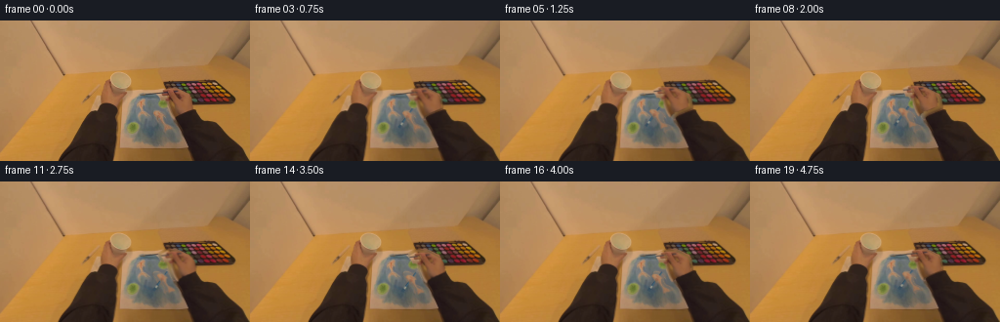
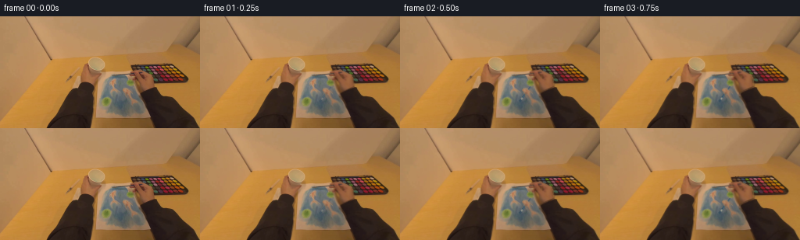

CODING AGENTS AS PIXEL WORLD MODELS
traex/GPT-6.1-Sol · common50_0017
点击播放 · 原生 RGB 像素
逐轮保存的候选
回放视频、检查图与代码变化。
每份候选均可单独播放。实际图片检查记录在下方工具轨迹中。
候选 01播放与检查图
点击播放 · 原生 RGB 像素


展开代码变化
--- 上一保存版本
+++ 本次保存版本
@@ -0,0 +1,166 @@
+from pathlib import Path
+import math
+import numpy as np
+from PIL import Image, ImageDraw, ImageFilter
+import artifact_io
+
+ROOT = Path(__file__).resolve().parent
+W,H=256,144
+SOURCE=np.array(Image.open(ROOT/'first_frame.png').convert('RGB'),dtype=np.uint8)
+Y,X=np.mgrid[:H,:W].astype(np.float32)
+
+
+def polygon(points):
+ im=Image.new('L',(W*4,H*4))
+ ImageDraw.Draw(im).polygon([(round(x*4),round(y*4)) for x,y in points],fill=255)
+ return np.array(im.resize((W,H),Image.Resampling.LANCZOS)).astype(np.float32)/255
+
+
+def blur(a, r):
+ return np.array(Image.fromarray(np.clip(a*255,0,255).astype(np.uint8)).filter(ImageFilter.GaussianBlur(r))).astype(np.float32)/255
+
+
+def sample(a,x,y):
+ x=np.clip(x,0,W-1.001);y=np.clip(y,0,H-1.001)
+ xi=x.astype(np.int32); yi=y.astype(np.int32)
+ fx=x-xi;fy=y-yi
+ if a.ndim==3:fx=fx[...,None];fy=fy[...,None]
+ return (a[yi,xi]*(1-fx)*(1-fy)+a[yi,xi+1]*fx*(1-fy)+a[yi+1,xi]*(1-fx)*fy+a[yi+1,xi+1]*fx*fy)
+
+
+def transform(a,dx,dy,angle=0,pivot=(183,89)):
+ c=math.cos(angle);s=math.sin(angle)
+ u=X-pivot[0]-dx;v=Y-pivot[1]-dy
+ sx=pivot[0]+c*u+s*v
+ sy=pivot[1]-s*u+c*v
+ return sample(a,sx,sy)
+
+
+def draw_brush(tip,grip,contact,opacity):
+ # Subpixel brush: a narrow blue enamel shaft, metal ferrule and loaded bristles.
+ scale=4
+ canvas=Image.new('RGBA',(W*scale,H*scale),(0,0,0,0))
+ d=ImageDraw.Draw(canvas)
+ tip=np.array(tip,float);grip=np.array(grip,float)
+ vec=grip-tip;length=np.linalg.norm(vec);u=vec/length;n=np.array([-u[1],u[0]])
+ def pt(p):return tuple((np.asarray(p)*scale).tolist())
+ def quad(a,b,wa,wb,col):
+ d.polygon([pt(a+n*wa),pt(b+n*wb),pt(b-n*wb),pt(a-n*wa)],fill=col)
+ end=grip+u*6
+ ferrule=tip+u*3.1
+ shaft=tip+u*5.9
+ quad(shaft,end,.88,.65,(43,73,93,255))
+ d.line([pt(shaft+n*.25),pt(end+n*.25)],fill=(95,121,136,210),width=2)
+ quad(ferrule,shaft,1.05,.92,(125,133,128,255))
+ d.line([pt(ferrule+n*.35),pt(shaft+n*.35)],fill=(173,164,143,230),width=2)
+ spread=1.35 if contact else .9
+ quad(tip-u*.3,ferrule,spread,1.0,(49,72,87,255))
+ for k in [-.7,-.25,.25,.7]:
+ d.line([pt(tip+n*k*spread),pt(ferrule+n*k*.78)],fill=(70+int(k*5),91+int(k*8),105+int(k*5),210),width=1)
+ a=np.array(canvas.resize((W,H),Image.Resampling.LANCZOS),dtype=np.float32)
+ return a[:,:,:3],a[:,:,3]/255*opacity
+
+
+def create_video():
+ src=SOURCE.astype(np.float32)
+ r,g,b=src.transpose(2,0,1)
+ # Numeric matte, constrained to the right-hand silhouette. A very soft edge
+ # preserves both the real skin shading and the narrow contours of the grip.
+ hand_domain=polygon([(161,73),(168,69),(182,70),(193,76),(198,83),
+ (198,90),(191,94),(181,100),(175,103),(181,109),(180,113),
+ (172,115),(165,111),(161,104),(155,99),(155,93),(160,91),
+ (168,92),(171,87),(169,82),(163,81)])
+ warm=np.minimum(np.clip((r-g-16)/11,0,1),np.clip((g-b-11)/11,0,1))
+ base_mask=warm*hand_domain
+ # Retain dark finger creases surrounded by skin, but not the paper between fingers.
+ mi=Image.fromarray((base_mask*255).astype(np.uint8))
+ closed=np.array(mi.filter(ImageFilter.MaxFilter(3)).filter(ImageFilter.MinFilter(3))).astype(np.float32)/255
+ matte=np.maximum(base_mask,closed*.92)*hand_domain
+ matte=blur(matte,.35)
+ # Inpaint only the silhouette that will be exposed by the moving hand.
+ hole=matte>.08
+ background=src.copy()
+ paper=polygon([(137,75),(164,75),(174,92),(183,107),(190,122),(161,130),(131,115),(130,91)])
+ paper_rgb=np.stack([118-.9*(Y-90),123-1.05*(Y-90),122-.95*(Y-90)],axis=-1)
+ paper_rgb+=np.sin(X*1.4+Y*1.1)[...,None]*1.5
+ table_rgb=np.stack([182-.12*(X-160),128-.06*(X-160),57+.025*(X-160)],axis=-1)
+ guess=paper_rgb*paper[...,None]+table_rgb*(1-paper[...,None])
+ background[hole]=guess[hole]
+ # Harmonic continuation copies nearby illumination and local surface colors.
+ for _ in range(260):
+ avg=(np.roll(background,1,0)+np.roll(background,-1,0)+np.roll(background,1,1)+np.roll(background,-1,1))*.25
+ background[hole]=avg[hole]*.985+guess[hole]*.015
+ clean=src*(1-matte[...,None])+background*matte[...,None]
+ original_shadow=blur(matte,1.1)
+ # Blue paint is clipped to paper. Existing source pigment is the texture base.
+ paint_domain=polygon([(145,101),(162,101),(167,113),(163,121),(146,120),(143,113)])
+ paint_domain*=np.clip((24-(r-g))/13,0,1)
+ pigment=np.stack([57+np.sin(Y*.4)*2,80+np.sin(X*.3)*2,97+np.sin(Y*.3)*2],axis=-1)
+ texture=(.92+.05*np.sin(X*2.7+Y*.65)+.03*np.sin(Y*4.2))
+ pigment+=((src-src.mean(2,keepdims=True))*.12)
+ accumulated=np.zeros((H,W),np.float32)
+ frames=[SOURCE.copy()]
+ tips=[]
+ # Three small, overlapping passes; the wrist stays relaxed rather than rotating rigidly.
+ for i in range(20):
+ if i<=2:
+ p=i/2
+ tx=154-.9*p;ty=110-.45*p
+ elif i<=7:
+ p=(i-2)/5; q=(1-math.cos(math.pi*p))/2
+ tx=153.1-5.4*q;ty=109.55-3.0*q+.3*math.sin(math.pi*p)
+ elif i<=12:
+ p=(i-7)/5;q=(1-math.cos(math.pi*p))/2
+ tx=147.7+11.0*q;ty=106.55+5.4*q
+ elif i<=17:
+ p=(i-12)/5;q=(1-math.cos(math.pi*p))/2
+ tx=158.7-7.2*q;ty=111.95+1.0*math.sin(math.pi*p)-.7*q
+ else:
+ p=(i-17)/2
+ tx=151.5+1.2*p;ty=111.25-1.1*p
+ tips.append(np.array([tx,ty]))
+ for i in range(1,20):
+ tip=tips[i]; dx,dy=tip-np.array([154.,110.])
+ angle=math.radians(-1.1*math.sin(i*.58))
+ # Contact is continuous during the short painting passes.
+ if i>=2:
+ prev=tips[i-1]
+ a=tip-prev;norm=np.dot(a,a)
+ t=np.clip(((X-prev[0])*a[0]+(Y-prev[1])*a[1])/(norm+1e-5),0,1)
+ cx=prev[0]+t*a[0];cy=prev[1]+t*a[1]
+ d=((X-cx)/1.6)**2+((Y-cy)/1.45)**2
+ stroke=np.exp(-d*1.15)*paint_domain*texture
+ accumulated=1-(1-accumulated)*(1-stroke*.19)
+ scene=clean.copy()
+ # Original hand does not abruptly disappear: at zero displacement restore its RGB.
+ wet=accumulated*.75
+ scene=scene*(1-wet[...,None])+pigment*wet[...,None]
+ ma=transform(matte,dx,dy,angle)
+ rgb=transform(src,dx,dy,angle)
+ # A subtle soft contact shadow follows the hand across the paper.
+ sh=blur(ma,1.35)
+ shadow=np.clip(sh-original_shadow*.8,0,1)*paper*.045
+ scene*=1-shadow[...,None]
+ grip=np.array([164.2,96.0])+[dx,dy]
+ bc,ba=draw_brush(tip,grip,True,min(1,i*.46))
+ # Shaft is behind the curled real fingers; only exposed parts are rendered.
+ ba*=1-ma*.97
+ scene=scene*(1-ba[...,None])+bc*ba[...,None]
+ scene=scene*(1-ma[...,None])+rgb*ma[...,None]
+ # Minute head motion, anchored near the paper, gives an egocentric handheld feel.
+ camx=.19*math.sin(i*.43);camy=.14*math.sin(i*.31)
+ scene=sample(scene,X-camx,Y-camy)
+ frames.append(np.clip(np.rint(scene),0,255).astype(np.uint8))
+ frames=np.stack(frames)
+ # Keep intermediate results available without needing any visual tool.
+ preview=ROOT/'candidate'
+ preview.mkdir(exist_ok=True)
+ for i in (1,5,10,15,19):Image.fromarray(frames[i]).save(preview/f'{i:02d}.png')
+ Image.fromarray((matte*255).astype(np.uint8)).save(preview/'hand_matte.png')
+ Image.fromarray(np.clip(clean,0,255).astype(np.uint8)).save(preview/'background.png')
+ artifact_io.save(frames,ROOT)
+ print('Saved', frames.shape, frames.dtype, 'first_frame_exact=',np.array_equal(frames[0],SOURCE))
+ print('Motion per transition (mean absolute RGB):',np.abs(np.diff(frames.astype(float),axis=0)).mean((1,2,3)).round(3).tolist())
+ print('Right hand matte area:',round(float(matte.sum()),1),'paint coverage:',round(float(accumulated.sum()),1))
+
+if __name__=='__main__':create_video()
可观测工具轨迹
实际执行的命令与返回图片。
命令 1exit 0
/bin/bash -lc 'ls -la && cat prompt.txt && cat GENERATION_RULES.md'
命令 2exit 0
/bin/bash -lc "cat task_spec.json && cat artifact_io.py && python - <<'PY'
from PIL import Image
import numpy as np
im=np.array(Image.open('first_frame.png'))
print(im.shape)
# Quantized color ASCII, 2x3 samples
for y in range(0,144,3):
s=''
for x in range(0,256,3):
r,g,b=im[y:y+3,x:x+3].mean((0,1))
if min(r,g,b)>185 and max(r,g,b)-min(r,g,b)<45: c='W'
elif b>r*1.3 and b>g*1.07: c='B'
elif r>g*1.14 and r>b*1.22 and r>80: c='S'
elif max(r,g,b)<65:c='#'
elif max(r,g,b)<115:c='d'
elif max(r,g,b)<165:c='.'
elif r>g*1.2:c='s'
else:c='-'
s+=c
print(f'{y:3} {s}')
PY"命令 3exit 0
/bin/bash -lc "python - <<'PY'
from PIL import Image
import numpy as np
im=np.array(Image.open('first_frame.png').convert('RGB'))
print('RGB', im.min((0,1)),im.max((0,1)),np.percentile(im,[10,50,90],axis=(0,1)))
for y in [0,20,40,60,80,100,120,140]:
print(y, [(x,tuple(im[y,x])) for x in range(0,256,16)])
print(Image.open('first_frame.png').mode)
PY"命令 4exit 0
/bin/bash -lc "python - <<'PY'
from PIL import Image
import numpy as np
im=np.array(Image.open('first_frame.png')).astype(float)
a=im.reshape(-1,3)
rng=np.random.default_rng(0);cent=a[rng.choice(len(a),14,False)]
for i in range(35):
d=((a[:,None]-cent)**2).sum(2);lab=d.argmin(1)
cent=np.array([a[lab==k].mean(0) if np.any(lab==k) else cent[k] for k in range(14)])
ix=np.argsort(cent[:,0]); chars='0123456789ABCD'; lut=np.empty(14,dtype='<U1');lut[ix]=list(chars)
for k in ix:print(lut[k], cent[k].round(1), (lab==k).sum())
for y in range(48,144,2):
s=''
for x in range(64,256,2):
col=im[y:y+2,x:x+2].mean((0,1));k=((cent-col)**2).sum(1).argmin();s+=lut[k]
print(f'{y:03} '+s)
print('x axis from 64 steps2')
PY"命令 5exit 0
/bin/bash -lc "python - <<'PY'
import numpy as np
from PIL import Image
im=np.array(Image.open('first_frame.png')).astype(float)
# neutrality: highlight color patch vs skin/table
for y in range(45,132,2):
s=''
for x in range(96,246,2):
r,g,b=im[y:y+2,x:x+2].mean((0,1))
if r<60 and g<55:c='#'
elif r<90 and g<65:c='k'
elif b>g+3:c='b'
elif g>r+3:c='G'
elif r-g<15 and g-b<17:c='w' if r>110 else 'g'
elif r-g<30 and g-b<35:c='.'
elif r-g>70:c='R'
elif r-g>50:c='s'
elif r-g>30:c='o'
else:c='-'
s+=c
print(f'{y:3} {s}')
print('blue pixels bbox')
m=(im[:,:,2]>im[:,:,0])&(im[:,:,2]>im[:,:,1]); yy,xx=np.where(m);print(len(xx), (xx.min(), yy.min(),xx.max(),yy.max()))
for y in [58,62,66,70,74,78,82,86,90,94,98,102,106,110,114,118,122]:
print(y, ' '.join(f'{x}:{int(im[y,x,0])},{int(im[y,x,1])},{int(im[y,x,2])}' for x in range(110,241,5)))
PY"命令 6exit 0
/bin/bash -lc "python - <<'PY'
from PIL import Image
import numpy as np
im=np.array(Image.open('first_frame.png')).astype(float)
# luminance and ratio map: neutral paper, shaded colored paint, skin, dark pants, surface
for y in range(70,129):
s=''
for x in range(120,199):
r,g,b=im[y,x]
if r<62 and g<54:c='#'
elif r-g>28 and g-b>13:
c='H' if b>72 else ('s' if b>50 else 'h')
elif g>r-13 and g-b>28:c='Y'
elif g-r>7 and b>g+4:c='B'
elif g>r+3:c='b'
elif r-g<20 and g-b<25:c='.' if r>110 else ','
else:c='o'
s+=c
print(f'{y:3} '+s)
PY"命令 7exit 0
/bin/bash -lc "python - <<'PY'
from PIL import Image
import numpy as np
im=np.array(Image.open('first_frame.png')).astype(float)
# Pixel luminosity map, cropping right hand region.
for y in range(64,115):
s=''
for x in range(143,201):
r,g,b=im[y,x];
if (r-g>23 and g-b>15):
c='@' if r>170 else ('O' if r>135 else ('o' if r>95 else ':'))
elif g-r>6 and b-g>3:c='B'
elif g-r>3 and b-g>=-6:c='b'
elif g-b>27 and g>r-15:c='Y'
elif max(r,g,b)<62:c='#'
elif g-r>0:c='g'
else:c='.'
s+=c
print(f'{y:3} {s}')
print('x=143..200')
PY"命令 8exit 0
/bin/bash -lc "python - <<'PY'
from PIL import Image
import numpy as np
im=np.array(Image.open('first_frame.png')).astype(int)
for y in range(54,117,2):
s=''
for x in range(106,196):
r,g,b=im[y,x]
c=' '
if (r-g>=22 and g-b>=12):c='S'
if (r-g>=22 and g-b>=12) and r<160:c='s'
if b-r>7 and b-g>2:c='B'
elif g-r>3 and b-g>-7:c='b'
if r<62 and g<54:c='#'
if abs(r-g)<12 and abs(g-b)<16 and r>100:c='.'
s+=c
print(f'{y:3} {s}')
print('\\nNear central skin diagonal exact RGB:')
for y in range(90,114,2):
print(y,[(x,tuple(im[y,x])) for x in range(150,179,2)])
PY"命令 9exit 0
/bin/bash -lc "python - <<'PY'
import numpy as np
from PIL import Image
im=np.asarray(Image.open('first_frame.png')).astype(float)
# simple ascii grayscale at full aspect (2 pixels wide to one char) entire frame
for y in range(0,144,2):
line=''
for x in range(0,256,2):
v=im[y:y+2,x:x+2].mean((0,1));l=np.dot(v,[.21,.72,.07]);line+=' .,:;irsXA253hMHGS#9B&@'[int(l/256*22)]
print(f'{y:03} '+line)
PY"命令 10exit 0
/bin/bash -lc "python - <<'PY'
from PIL import Image
import numpy as np
im=np.array(Image.open('first_frame.png')).astype(int)
# Blue handle search pixels cold between grey regions and outside
for y in range(50,134):
xx=np.where((im[y,:,2]-im[y,:,0]>8)&(im[y,:,2]-im[y,:,1]>3))[0]
if len(xx):print(y, [(int(x), tuple(map(int,im[y,x]))) for x in xx[::2]])
print('non wood complete RGB 4 grid')
for y in range(55,144,4):
print(y,' '.join(f'{x}:{im[y,x,0]}/{im[y,x,1]}/{im[y,x,2]}' for x in range(110,202,4)))
PY"命令 11exit 0
/bin/bash -lc "cat > generate.py <<'PY'
from pathlib import Path
import math
import numpy as np
from PIL import Image, ImageDraw, ImageFilter
import artifact_io
ROOT = Path(__file__).resolve().parent
W,H=256,144
SOURCE=np.array(Image.open(ROOT/'first_frame.png').convert('RGB'),dtype=np.uint8)
Y,X=np.mgrid[:H,:W].astype(np.float32)
def polygon(points):
im=Image.new('L',(W*4,H*4))
ImageDraw.Draw(im).polygon([(round(x*4),round(y*4)) for x,y in points],fill=255)
return np.array(im.resize((W,H),Image.Resampling.LANCZOS)).astype(np.float32)/255
def blur(a, r):
return np.array(Image.fromarray(np.clip(a*255,0,255).astype(np.uint8)).filter(ImageFilter.GaussianBlur(r))).astype(np.float32)/255
def sample(a,x,y):
x=np.clip(x,0,W-1.001);y=np.clip(y,0,H-1.001)
xi=x.astype(np.int32); yi=y.astype(np.int32)
fx=x-xi;fy=y-yi
if a.ndim==3:fx=fx[...,None];fy=fy[...,None]
return (a[yi,xi]*(1-fx)*(1-fy)+a[yi,xi+1]*fx*(1-fy)+a[yi+1,xi]*(1-fx)*fy+a[yi+1,xi+1]*fx*fy)
def transform(a,dx,dy,angle=0,pivot=(183,89)):
c=math.cos(angle);s=math.sin(angle)
u=X-pivot[0]-dx;v=Y-pivot[1]-dy
sx=pivot[0]+c*u+s*v
sy=pivot[1]-s*u+c*v
return sample(a,sx,sy)
def draw_brush(tip,grip,contact,opacity):
# Subpixel brush: a narrow blue enamel shaft, metal ferrule and loaded bristles.
scale=4
canvas=Image.new('RGBA',(W*scale,H*scale),(0,0,0,0))
d=ImageDraw.Draw(canvas)
tip=np.array(tip,float);grip=np.array(grip,float)
vec=grip-tip;length=np.linalg.norm(vec);u=vec/length;n=np.array([-u[1],u[0]])
def pt(p):return tuple((np.asarray(p)*scale).tolist())
def quad(a,b,wa,wb,col):
d.polygon([pt(a+n*wa),pt(b+n*wb),pt(b-n*wb),pt(a-n*wa)],fill=col)
end=grip+u*6
ferrule=tip+u*3.1
shaft=tip+u*5.9
quad(shaft,end,.88,.65,(43,73,93,255))
d.line([pt(shaft+n*.25),pt(end+n*.25)],fill=(95,121,136,210),width=2)
quad(ferrule,shaft,1.05,.92,(125,133,128,255))
d.line([pt(ferrule+n*.35),pt(shaft+n*.35)],fill=(173,164,143,230),width=2)
spread=1.35 if contact else .9
quad(tip-u*.3,ferrule,spread,1.0,(49,72,87,255))
for k in [-.7,-.25,.25,.7]:
d.line([pt(tip+n*k*spread),pt(ferrule+n*k*.78)],fill=(70+int(k*5),91+int(k*8),105+int(k*5),210),width=1)
a=np.array(canvas.resize((W,H),Image.Resampling.LANCZOS),dtype=np.float32)
return a[:,:,:3],a[:,:,3]/255*opacity
def create_video():
src=SOURCE.astype(np.float32)
r,g,b=src.transpose(2,0,1)
# Numeric matte, constrained to the right-hand silhouette. A very soft edge
# preserves both the real skin shading and the narrow contours of the grip.
hand_domain=polygon([(161,73),(168,69),(182,70),(193,76),(198,83),
(198,90),(191,94),(181,100),(175,103),(181,109),(180,113),
(172,115),(165,111),(161,104),(155,99),(155,93),(160,91),
(168,92),(171,87),(169,82),(163,81)])
warm=np.minimum(np.clip((r-g-16)/11,0,1),np.clip((g-b-11)/11,0,1))
base_mask=warm*hand_domain
# Retain dark finger creases surrounded by skin, but not the paper between fingers.
mi=Image.fromarray((base_mask*255).astype(np.uint8))
closed=np.array(mi.filter(ImageFilter.MaxFilter(3)).filter(ImageFilter.MinFilter(3))).astype(np.float32)/255
matte=np.maximum(base_mask,closed*.92)*hand_domain
matte=blur(matte,.35)
# Inpaint only the silhouette that will be exposed by the moving hand.
hole=matte>.08
background=src.copy()
paper=polygon([(137,75),(164,75),(174,92),(183,107),(190,122),(161,130),(131,115),(130,91)])
paper_rgb=np.stack([118-.9*(Y-90),123-1.05*(Y-90),122-.95*(Y-90)],axis=-1)
paper_rgb+=np.sin(X*1.4+Y*1.1)[...,None]*1.5
table_rgb=np.stack([182-.12*(X-160),128-.06*(X-160),57+.025*(X-160)],axis=-1)
guess=paper_rgb*paper[...,None]+table_rgb*(1-paper[...,None])
background[hole]=guess[hole]
# Harmonic continuation copies nearby illumination and local surface colors.
for _ in range(260):
avg=(np.roll(background,1,0)+np.roll(background,-1,0)+np.roll(background,1,1)+np.roll(background,-1,1))*.25
background[hole]=avg[hole]*.985+guess[hole]*.015
clean=src*(1-matte[...,None])+background*matte[...,None]
original_shadow=blur(matte,1.1)
# Blue paint is clipped to paper. Existing source pigment is the texture base.
paint_domain=polygon([(145,101),(162,101),(167,113),(163,121),(146,120),(143,113)])
paint_domain*=np.clip((24-(r-g))/13,0,1)
pigment=np.stack([57+np.sin(Y*.4)*2,80+np.sin(X*.3)*2,97+np.sin(Y*.3)*2],axis=-1)
texture=(.92+.05*np.sin(X*2.7+Y*.65)+.03*np.sin(Y*4.2))
pigment+=((src-src.mean(2,keepdims=True))*.12)
accumulated=np.zeros((H,W),np.float32)
frames=[SOURCE.copy()]
tips=[]
# Three small, overlapping passes; the wrist stays relaxed rather than rotating rigidly.
for i in range(20):
if i<=2:
p=i/2
tx=154-.9*p;ty=110-.45*p
elif i<=7:
p=(i-2)/5; q=(1-math.cos(math.pi*p))/2
tx=153.1-5.4*q;ty=109.55-3.0*q+.3*math.sin(math.pi*p)
elif i<=12:
p=(i-7)/5;q=(1-math.cos(math.pi*p))/2
tx=147.7+11.0*q;ty=106.55+5.4*q
elif i<=17:
p=(i-12)/5;q=(1-math.cos(math.pi*p))/2
tx=158.7-7.2*q;ty=111.95+1.0*math.sin(math.pi*p)-.7*q
else:
p=(i-17)/2
tx=151.5+1.2*p;ty=111.25-1.1*p
tips.append(np.array([tx,ty]))
for i in range(1,20):
tip=tips[i]; dx,dy=tip-np.array([154.,110.])
angle=math.radians(-1.1*math.sin(i*.58))
# Contact is continuous during the short painting passes.
if i>=2:
prev=tips[i-1]
a=tip-prev;norm=np.dot(a,a)
t=np.clip(((X-prev[0])*a[0]+(Y-prev[1])*a[1])/(norm+1e-5),0,1)
cx=prev[0]+t*a[0];cy=prev[1]+t*a[1]
d=((X-cx)/1.6)**2+((Y-cy)/1.45)**2
stroke=np.exp(-d*1.15)*paint_domain*texture
accumulated=1-(1-accumulated)*(1-stroke*.19)
scene=clean.copy()
# Original hand does not abruptly disappear: at zero displacement restore its RGB.
wet=accumulated*.75
scene=scene*(1-wet[...,None])+pigment*wet[...,None]
ma=transform(matte,dx,dy,angle)
rgb=transform(src,dx,dy,angle)
# A subtle soft contact shadow follows the hand across the paper.
sh=blur(ma,1.35)
shadow=np.clip(sh-original_shadow*.8,0,1)*paper*.045
scene*=1-shadow[...,None]
grip=np.array([164.2,96.0])+[dx,dy]
bc,ba=draw_brush(tip,grip,True,min(1,i*.46))
# Shaft is behind the curled real fingers; only exposed parts are rendered.
ba*=1-ma*.97
scene=scene*(1-ba[...,None])+bc*ba[...,None]
scene=scene*(1-ma[...,None])+rgb*ma[...,None]
# Minute head motion, anchored near the paper, gives an egocentric handheld feel.
camx=.19*math.sin(i*.43);camy=.14*math.sin(i*.31)
scene=sample(scene,X-camx,Y-camy)
frames.append(np.clip(np.rint(scene),0,255).astype(np.uint8))
frames=np.stack(frames)
# Keep intermediate results available without needing any visual tool.
preview=ROOT/'candidate'
preview.mkdir(exist_ok=True)
for i in (1,5,10,15,19):Image.fromarray(frames[i]).save(preview/f'{i:02d}.png')
Image.fromarray((matte*255).astype(np.uint8)).save(preview/'hand_matte.png')
Image.fromarray(np.clip(clean,0,255).astype(np.uint8)).save(preview/'background.png')
artifact_io.save(frames,ROOT)
print('Saved', frames.shape, frames.dtype, 'first_frame_exact=',np.array_equal(frames[0],SOURCE))
print('Motion per transition (mean absolute RGB):',np.abs(np.diff(frames.astype(float),axis=0)).mean((1,2,3)).round(3).tolist())
print('Right hand matte area:',round(float(matte.sum()),1),'paint coverage:',round(float(accumulated.sum()),1))
if __name__=='__main__':create_video()
PY
python generate.py"命令 12exit 1
/bin/bash -lc "python - <<'PY'
from PIL import Image
import numpy as np
m=np.array(Image.open('candidate/hand_matte.png'))
a=np.array(Image.open('first_frame.png')).astype(float)
b=np.array(Image.open('frames/07.png')).astype(float)
for y in range(68,118,2):
print(f'{y:3}',''.join('X' if m[y,x]>170 else ('+' if m[y,x]>60 else ('s' if a[y,x,0]-a[y,x,1]>25 and a[y,x,1]-a[y,x,2]>15 else '.')) for x in range(146,202)))
print('Masked color diff initial to clean',np.abs(a-np.array(Image.open('candidate/background.png'))).mean(), 'max',np.max(np.abs(a-b)))
# Verify packed RGB artifact and png frames.
p=np.load('pixels.npz')['pixels'];print(p.shape,p.dtype)
print('all png:',len(list(__import__('pathlib').Path('frames').glob('*.png'))))
print('global differences',[(i,float(np.abs(a-np.array(Image.open(f'frames/{i:02}.png')))).mean())) for i in [1,5,7,10,12,17,19]])
PY"命令 13exit 0
/bin/bash -lc "python - <<'PY'
from PIL import Image
from pathlib import Path
import numpy as np
m=np.array(Image.open('candidate/hand_matte.png'))
a=np.array(Image.open('first_frame.png')).astype(float)
b=np.array(Image.open('frames/07.png')).astype(float)
for y in range(68,118,2):
print(f'{y:3}',''.join('X' if m[y,x]>170 else ('+' if m[y,x]>60 else ('s' if a[y,x,0]-a[y,x,1]>25 and a[y,x,1]-a[y,x,2]>15 else '.')) for x in range(146,202)))
print('Masked color diff initial to clean',np.abs(a-np.array(Image.open('candidate/background.png'))).mean(), 'max',np.max(np.abs(a-b)))
p=np.load('pixels.npz')['pixels'];print(p.shape,p.dtype)
print('all png:',len(list(Path('frames').glob('*.png'))))
print('global differences',[(i,float(np.abs(a-np.array(Image.open(f'frames/{i:02}.png'))).mean())) for i in [1,5,7,10,12,17,19]])
PY"保存候选 1 份；完成命令 13 次；可验证图片返回 0 张。原始 API 响应与完整日志保留在本地。